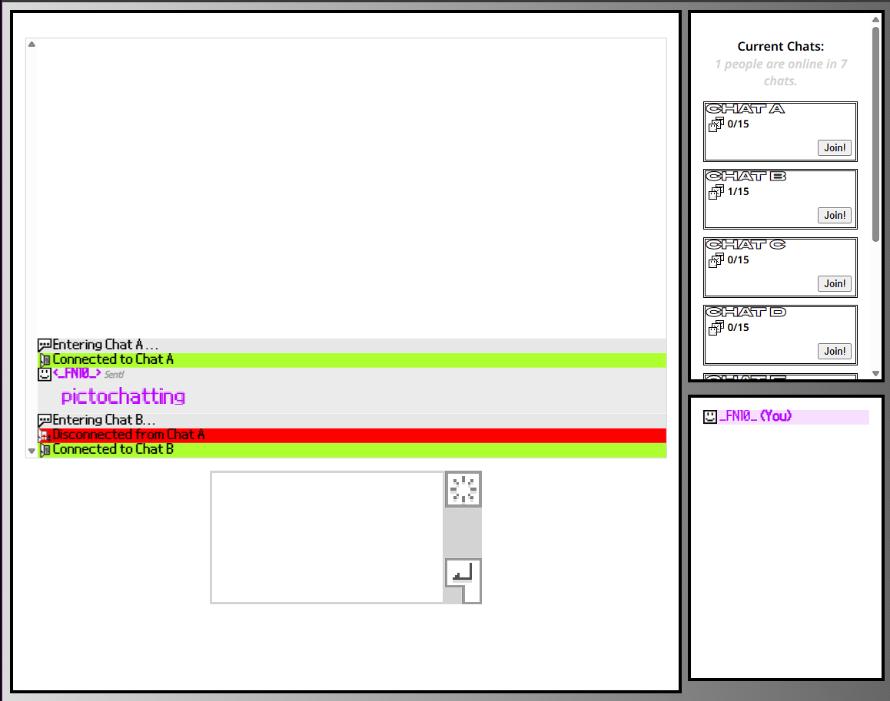

Minecraft Bedrock Addons can be confusing, tedious, and annoying.
Coupled with Microsoft & Mojang's constant depercating, and changing,
some addons can be bad.
bedrockR is what I'm hoping can eliminate those challenges with a
useful user interface, and regular updates. bedrockR is heavily
inspired by MCreator, and how its bedrock building is very neglected;
being out of date, and lacking many features.
bedrockR's goal is to become what MCreator couldn't do, and be a fully
featured bedrock addon maker, with many elements that most people
probably dont know about.
Made with HTML, JS, CSS, and a server in Java! Also made for HackClub's Siege (bedrockR was technicly on it too!) Built from the ground up with webhooks, and rest apis!

Another Java program made for managing your hacked PSP. Plus some
functionality for PSVita, and PS3.
Full feature list: